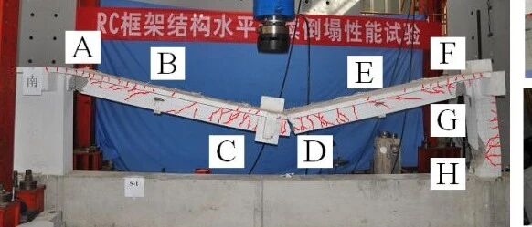

新论文：次边缘柱失效后钢筋混凝土平面框架连续倒塌承载力的试验分析和计算评估

论文链接：
https://doi.org/10.1061/(ASCE)CF.1943-5509.0001420
01
研究背景
美国国防部抗连续倒塌设计规范指出，在角部或次边缘区域的构件失效后，框架结构的横向约束减弱可能不能提供足够的反力，因此需要加强这些区域的局部承载力以提高整体抗倒塌能力，但是该规范并未提出具体设计要求。目前仅少部分文献对RC子结构开展了弱约束下的抗连续倒塌性能研究，导致相关设计还缺少依据。
本研究取典型多层混凝土框架底层的一榀平面缩尺框架开展了分别移除次边缘柱和中柱后的连续倒塌试验，对比分析了结构的承载能力、破坏形态和内力分布，并对试验试件的原型框架开展了在次边缘柱失效下的易损性评估。
02
研究内容

(a) 原型RC框架结构

(b) 次边缘柱失效PCR试件

(c) 中柱失效ICR试件
图1 试验试件
注：蓝色字体A-F分别为试件的六个截面；BC-梁面混凝土应变仪；CC-柱面混凝土应变仪；D-位移计
在试验分析的基础上，建立了原型RC框架的计算模型，对结构在边缘柱失效场景下的连续倒塌侧向约束需求进行分析。由于抗震设计对不同楼层结构的承载力提升差异明显，对底层和顶层的次边缘柱分别失效作为典型代表进行了检验（如图2所示）。检验方法是：1）计算与失效柱相邻柱（图2红色标记柱）在重力荷载及不同抗震设防烈度下的设计强度；2）计算次边缘柱失效后，分别在小变形和大变形下，相邻柱的抗力需求；3）通过对比分析相邻柱是否能够提供足够的周边约束，使得框架结构能够有效发挥连续倒塌抗力，从而检验次边缘柱失效场景下，规范设计值是否满足抗连续倒塌需求。

图2 次边缘柱失效场景（底层和顶层次边缘柱分别失效）
03
研究结果
通过试验，可以得到如图3所示的PCR和ICR两个试件的承载力-位移曲线。图中，点A、B、C分别对应压拱机制的峰值载荷、压拱机制与悬链线机制的转换点、悬链线阶段的峰值载荷。
对于PCR试件，位移90mm时，边柱柱顶G截面外侧出现水平裂缝。位移190mm时，边柱柱底H截面外侧出现水平裂缝。250mm时，H截面内侧混凝土剥落，载荷开始下降。270mm时，D截面底部两根钢筋连续断裂，载荷突然下降。390mm时，边柱柱底压溃试验结束，最终破坏模式和裂缝分布如图4。试验曲线和破坏模式显示，边缘柱的弱约束降低了压拱机制的承载力，并且悬链线机制未有效发挥。

图3 承载力-位移曲线

图4 PCR试件破坏模式
对于PCR试件，在小变形下，梁板的压力将边柱推向构件外，使得边柱柱顶产生向外的水平位移，如图5所示。当压拱机制达到峰值时，边柱柱顶水平位移达到3mm。此后由于压拱机制减弱，柱顶水平位移向试件内发展。大变形下，钢筋的拉力使得柱顶水平位移向试件内逐渐增加。
图6(a)表明压拱机制阶段的倒塌抗力计算结果和试验结果吻合良好。进一步对压拱机制的倒塌抗力贡献进行计算分析，结果如图6(b)，在达到峰值贡献之前，PCR试件中的压拱机制贡献增长慢于ICR试件，且峰值贡献比ICR试件低16%，在后期PCR试件的压拱机制贡献比ICR低21%。

图5 边柱柱顶水平位移发展


图 6 压拱机制阶段内力计算结果：(a) 计算值和试验值的比较；(b) 压拱机制的贡献
现有抗倒塌设计规范基本关注梁板的弯矩承载力，很少关注提供水平约束的柱的弯矩承载力。本文在对整体结构的连续倒塌易损性评估中发现，一般情况下，柱的弯矩承载力由重力和抗震设计值决定，可能不能满足抗倒塌需求。因此在次边缘柱失效场景下，相邻的柱可能会进一步失效而引发连续倒塌扩散，这种破坏在低设防烈度结构和结构上部表现更为突出，是容易发生连续倒塌的场景（表1）。

图 7悬链线阶段钢筋提供的拉力与实际抗力比较
表1 不同设计工况下的柱端弯矩 （单位：kN×m）

04
研究结论
1) 压拱机制阶段，PCR试件的峰值抗力和对应的位移比ICR试件分别小9%和大25%。悬链线机制阶段，ICR的倒塌抗力明显增长并超过了压拱机制阶段的峰值抗力。而PCR抗力未明显增长。
2) 内力计算显示在PCR中压拱机制的贡献比ICR低了21%。ICR中悬链线效应发挥充分，最终抗力几乎都由钢筋拉力提供。而PCR中，由钢筋提供的抗力只占35%。
3) 对原型框架的易损性评估表明，柱的弯矩承载力由重力和抗震设计值决定，可能不能满足抗倒塌需求。在次边缘柱失效场景下，相邻的柱可能会进一步失效而引发连续倒塌扩散，这种破坏在低设防烈度和结构上部更容易发生。
--End--
相关研究
新论文：抗震&防连续倒塌：一种新型构造措施
长按识别二维码，关注我们的科研动态